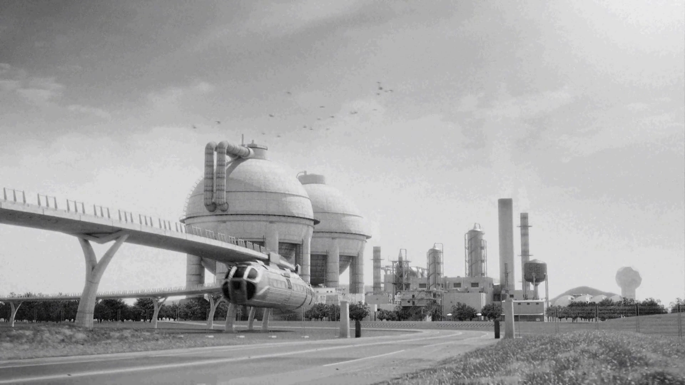
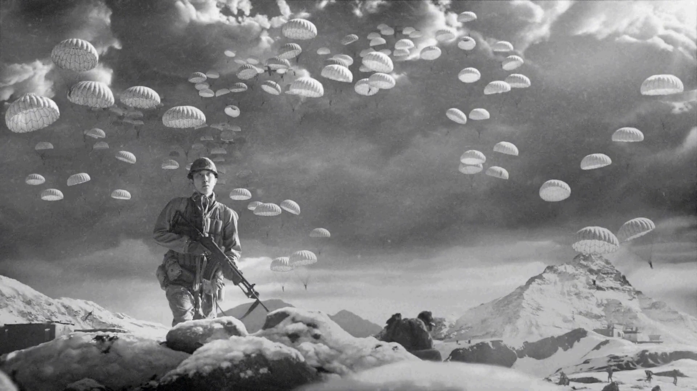
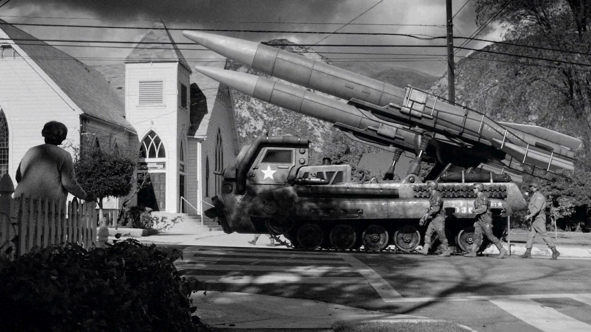
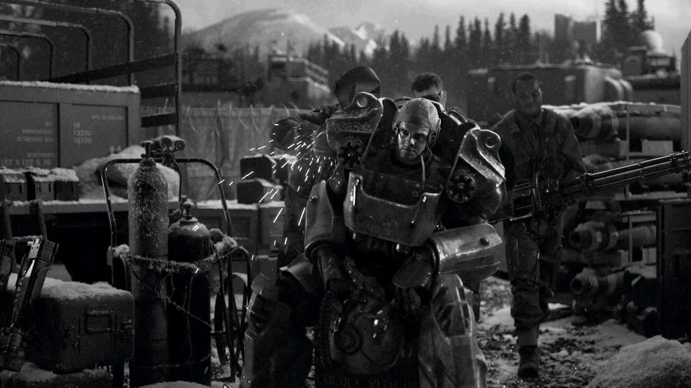
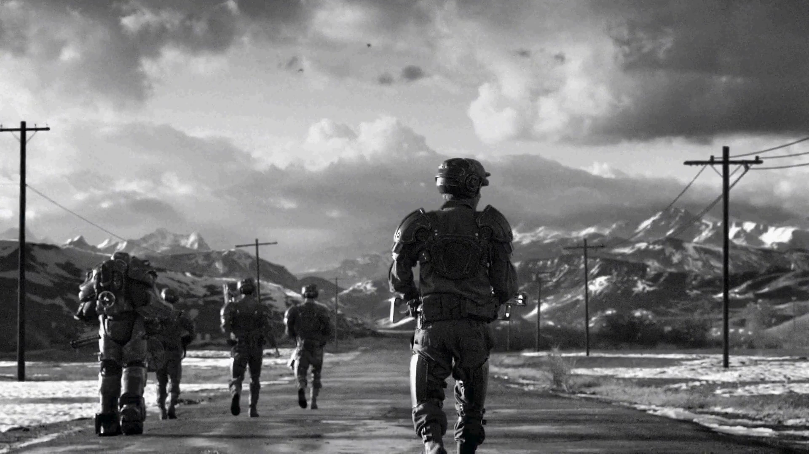

Sino-American War
中米戦争
「外交はほぼ停止し、通常戦争は両国に歴史的な代償を強いている。多くの人が、この偉大なるアメリカが、ついに勝てない戦いに足を踏み入れたのではないかと思い始めている」
── ニュースキャスター
中米戦争は、Falloutシリーズのタイムラインにおける最も重要な歴史的事象です。21世紀の二大超大国──中華人民共和国とアメリカ合衆国が、地球上に残された最後のエネルギー資源をめぐって衝突した全面戦争であり、資源の争いであると同時にイデオロギーの争いでした。
両国による外国人・自国民への残虐行為、核・生物・化学兵器を含む敵対行為の段階的エスカレーション、そして両国家が互いに区別のつかない全体主義独裁国家へと変貌していったことが、この戦争の特徴です。
ピーク時には人類史上最も破壊的な戦争となり、熱核交換──大戦として知られる出来事──によって旧世界は終わりを告げ、ウェイストランドが生まれました。
前史

メキシコ侵攻（2051年）
中米戦争に20年以上先立つ2051年、アメリカはメキシコに侵攻しました。原油供給を確保するため、まず経済制裁でメキシコを不安定化させ、政治的不安定と汚染を脅威として引用し、軍事侵攻に踏み切りました。石油精製施設とインフラを掌握し、メキシコの犠牲の上にアメリカ市場への石油流通を確保しました。
中東戦争（2052年）
2052年、原油価格の高騰は世界的危機を引き起こし、小国家を次々と破産させました。欧州連邦は中東の法外な価格の支払いを拒否し、軍事行動に出ました。
7月の国連解散は資源戦争の始まりを告げました。
ニュー・プレイグ（2053年）
2053年、ニュー・プレイグウイルスが出現。アメリカ史上初の全国的検疫と国境封鎖が行われ、数万人が死亡。噂では遺伝子操作された生物兵器とされました。
2055年、政府はウェスト・テックに治療法の開発を委託。治療法は発見されませんでしたが、この研究がのちのFEV（強制進化ウイルス）開発への道を開きました。
プロジェクト・セーフハウス（2054年）
中東の核交換、ニュー・プレイグを受けて、2054年に連邦政府はプロジェクト・セーフハウスを設立。Vault-Tecがシェルター建設契約を獲得し、Vaultの大規模建設が始まりました。
アンカレッジ前線（2059年）・ナイアガラ破壊工作（2062年）
2059年、アメリカはアラスカの石油資源を守るためアンカレッジ前線を設立。カナダに対し、アラスカ・パイプラインの防衛のため自国通過を容認するよう圧力をかけました。
2062年、中国の主要スパイワン・ヤンがナイアガラ破壊工作に関連して逮捕されました。
戦争の経過
侵攻（2066-2067年）

2066年春、世界の石油資源が枯渇し、化石燃料に大きく依存していた中国経済は崩壊寸前に。アメリカが原油輸出を拒否したため、交渉は決裂。
同年夏、アメリカはパワーアーマー研究から生まれた初のマイクロフュージョンセルを公開し、中米関係はさらに悪化。
2066年冬、ジンウェイ将軍の指揮下、中国軍がアラスカに上陸。大規模な空挺強襲を伴うこの作戦により、アラスカの石油パイプライン・油井・備蓄を掌握。中米戦争が始まりました。
アメリカ軍は全前線で後退。補給路確保のためカナダに通過を求め、渋々の承諾が後の併合への伏線となりました。
2067年1月、初のパワーアーマーT-45がアラスカに配備。粗削りながらも重火器を軽々と扱える能力で、中国の戦車と歩兵を凌駕。しかし前線は安定にとどまり、膠着状態に陥りました。
コンスタンティン・チェイス将軍と新設のパワーアーマー部隊が前線安定の要となりました。
安定化とエスカレーション（2068-2073年）
アラスカの戦争は増大する資源を呑み込み続けました。2069年頃からカナダの資源が限界まで搾取され、広大な森林地帯が破壊。カナダの抗議は無視され、「リトル・アメリカ」と呼ばれるようになりました。
2072年6月3日、トランス・アラスカ・パイプラインの破壊工作をきっかけに、カナダ併合が正式に開始されました。
遠隔戦場での消耗戦に引き込まれた中国は、前線で生物兵器の使用を許可。これに対しアメリカは2073年9月15日、ウェスト・テックに汎免疫ウイルス（PVP）の開発を命令──のちのFEV計画の始まりでした。
膠着（2074-2076年）

2074年、防衛戦争を標榜していたにもかかわらず、アメリカは中国本土への反攻を開始。カナダ、アラスカ、中国の三正面作戦で経済は限界に。8年の戦争を経ても、どちらも引く気配はなく、膠着状態に。
汕頭、ゴビ砂漠、南京、マンバハオ（フィリピン）でも戦闘が勃発。
2075年、DIAのPAMが中国のステルス潜水艦（ゴースト・フリート）の存在を91%の確率で警告。しかし上層部は「馬鹿げている」と却下しました。
2076年1月、カナダ併合が完了。抗議者は射殺、残虐行為の写真がアメリカに流出し、国内の不安を増大させました。
6月、T-51パワーアーマーが完成し中国に投入。中国兵は目撃するだけで降伏し始めましたが、効果は長続きせず。
8月、食料・エネルギー暴動がアメリカ各地の都市で発生。非常事態宣言、そして戒厳令が敷かれました。
相互確証破壊（2077年）

2077年1月、消耗と補給路断絶により中国軍がアラスカで包囲。チェイス将軍率いる冬季T-51部隊がアンカレッジを解放。10年に及んだアンカレッジ奪還作戦が終了し、ジンウェイ将軍は戦死しました。

アラスカの勝利に勢いづき、中国本土の攻勢が再活性化。しかし奥地に進むほど抵抗は激化し、10月には再び膠着。上海は中国の手にあり、南京の戦いは月単位で長引きました。
大統領とエンクレイヴ幹部は、中国からの核攻撃を予期して遠隔地に退避。石油リグが将来のエンクレイヴの拠点となりました。
戦争は事実上勝てないものとなり、交渉が始まりましたが、大統領の不在で進展は遅々として進まず。
大戦
2077年10月23日の朝、アンカレッジでの和平交渉が崩壊。
追い詰められた中国が核攻撃を開始しました。
03:37 ── ベーリング海峡上空で高高度爆撃機の編隊を確認
09:13 ── IONDS（統合作戦核検出システム）が最初の4発のミサイル発射を検出。DEFCON 2に移行
09:17 ── NORAD確認。世界の運命が決定
09:26 ── 大統領がシナリオMX-CN91に基づく報復攻撃を命令
09:42 ── 中国の核兵器がペンシルベニアとニューヨークに着弾
09:47 ── アメリカの施設の大半がオフラインに
ギャラリー
Fallout世界の全てはここから始まった。
2051年のメキシコ侵攻から2077年の核の炎まで、26年間のエスカレーション。
驚くべきは、両国がいかに似通っていくかということ。
資源のために他国を侵略し、自国民を弾圧し、全体主義に陥っていく。
「共産主義の犬」と「資本主義の豚」──結局、区別がつかなくなる。
T-51パワーアーマーの中国配備で兵士が「見ただけで降伏」したのに、
それでも戦争は終わらなかった。テクノロジーの優位は勝利を保証しない。
同じ頃、アメリカ国内では食料暴動で戒厳令。勝利の瞬間に内部崩壊。
そして10月23日、わずか44分で全てが終わった。
09:13の検出から09:47の全施設オフラインまで──
11年の戦争の結末が、34分の核交換に凝縮される。
「War. War never changes.」の意味が、ここに集約されています。
This article was created by translating and editing Sino-American War from Nukapedia: The Fallout Wiki.
Licensed under the Creative Commons Attribution-Share Alike License (CC BY-SA 3.0).
コミュニティ維持のため、寄付を受け付けております。
> COMMENTS